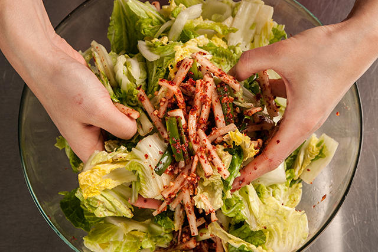
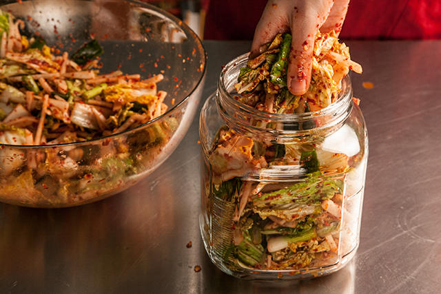

You will need:
Cut the cabbage in half lengthwise, then crosswise into 2-inch pieces, discarding the root end. Place in a large bowl, sprinkle with the salt, and toss with your hands until the cabbage is coated. Add enough cold water to just cover (about 12 cups), making sure the cabbage is submerged (it’s OK if a few leaves break the surface). Cover with plastic wrap or a baking sheet and let sit at room temperature at least 12 hours and up to 24 hours.
Place a colander in the sink, drain the cabbage, and rinse with cold water. Gently squeeze out the excess liquid and transfer to a medium bowl; set aside.
Place the remaining ingredients in a large bowl and stir to combine.
Add the cabbage and toss with your hands until evenly combined and the cabbage is thoroughly coated with the mixture.
Pack the mixture tightly into a clean 2-quart or 2-liter glass jar with a tightfitting lid and seal the jar. Let sit in a cool, dark place for 24 hours (the mixture may bubble).
Open the jar to let the gases escape, then reseal and refrigerate at least 48 hours before eating (kimchi is best after fermenting about 1 week). Refrigerate for up to 1 month.